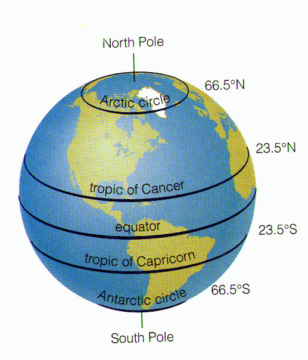

Project Summary

Latitude is defined as the angular distance of a place north or south of the earth's equator, usually expressed in degrees and minutes. In this project, we set out to determine the effect of latitude on cloudiness, maximum temperature, humidity, and wind speed. Our data comes from 500 randomly-selected cities across the globe, measured on January 5th, 2017..
You might already have an idea of how latitude affects weather, but are cities closer to the equator always hotter? Take a look around and draw your own conclusions on this and other questions. On this site, you'll find a visualization chart for each data type we studied: cloundiness, maximum temperature, humidity, and wind speed.
Click on a plot to explore!